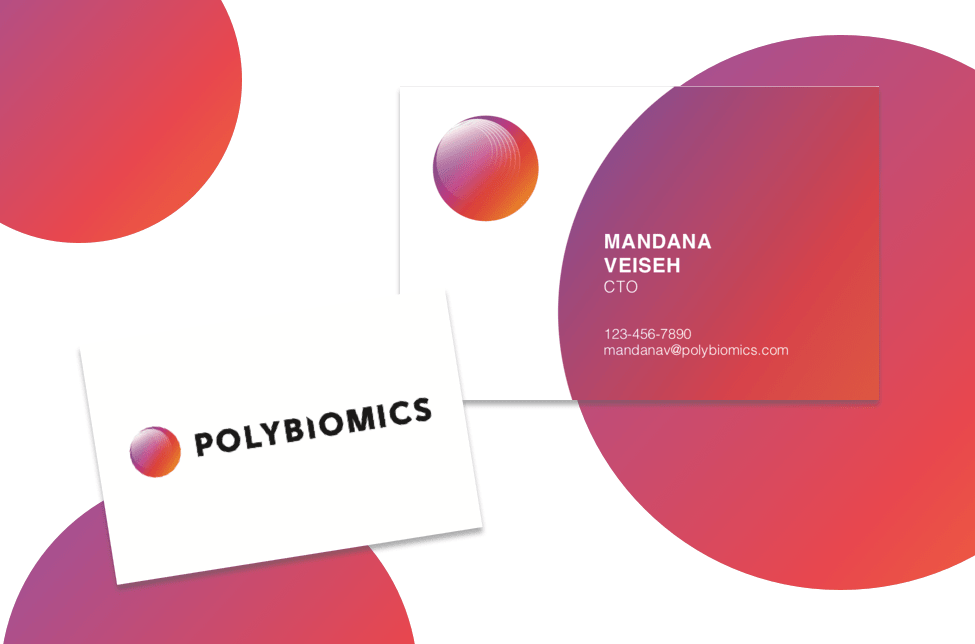

Polybiomics' chosen design

Project Type: Print
Tools: InDesign
Collaborators: PolyBiomics Co-founders
I met PolyBiomics, a life-science research startup, while I worked at the SkyDeck accelerator at UC Berkeley. At the time, they were in the early stage of defining their brand and visual identity with the help of Pilothouse design agency. They eventually came to me in need of business card design assistance. Below are the proposed designs I created for them, keeping in line with their new visual identity.